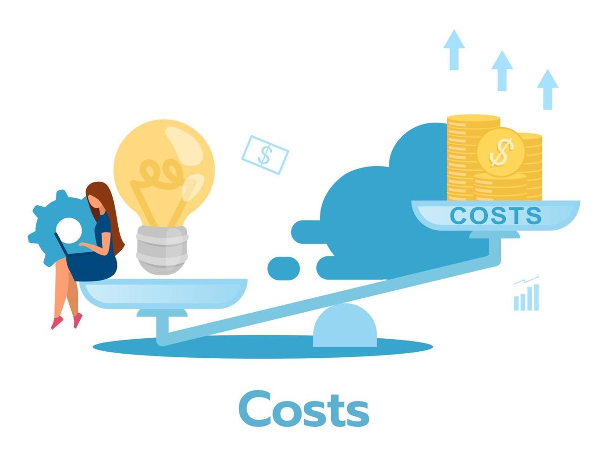

¿Como vas a ganar dinero?
Fuentes de ingresos
La principal fuente de ingresos de la banda será la paga que recibirá por parte de las empresas que contraten el servicio, sin embargo, también se contempla la posibilidad de que el servicio sea adquirido por un único individuo natural como los recicladores informales
Actividades clave
Desarrollo y mejora de la tecnología de la banda clasificadora de reciclaje
·Producir y ensamblar estas bandas, adaptándolas a las necesidades de cada cliente, y se les ofrecen soporte técnico continuo.
·Capacitar a los usuarios para que puedan utilizar el sistema de manera eficiente.
·Asegurarse que el producto cumpla con todas las normas y regulaciones ambientales.

Recursos clave
Tecnología avanzada para automatizar el reciclaje, protegida por patentes, relaciones fuertes con proveedores que suministran los materiales necesarios para fabricar las bandas. El apoyo financiero de inversores nos permite seguir creciendo, y la buena reputación en sostenibilidad nos da credibilidad en el mercado, lo que nos hace destacar como líderes en tecnología ecológica.
Estructura de costos
Costos de investigación y desarrollo: Pruebas de diferentes materiales y de nuevos diseños de la banda según el tamaño que se requiera
Costos de marketing y ventas: Publicidad en redes sociales
Costos de infraestructura: Mantenimiento de la programación y material de la banda
Economía de escala: Comprar materiales al por mayor para reducir los costos.
Costos variables: Materiales para construcción y precio de envíos
Costos fijos: Mano de obra y los salarios de nuestros empleados.
